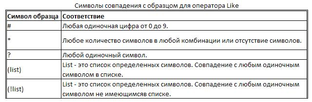

Like - оператор VBA для сравнения строки с шаблоном. Нечеткий поиск
Подробности
Категория: Основы VBA
Опубликовано: 17 января 2013
Кроме сравнения строк с использованием операторов "равно", "больше" и "меньше", в языке Visual Basic for Applications (VBA) доступен оператор Like, который можно использовать только для сравнения строк.
Как программно найти и удалить определенные строки в Excel, используя VBA-оператор Like
http://macros-vba.ru/makrosy/excel/132-kak-najti-stroki-v-excel-poisk-strok-slov-i-simvolov-v-excel
Sub Udalenie_Strok_Po_Shablonu()
Dim r As Long, FirstRow As Long, LastRow As Long
Dim Region As Range, iRow As Range, Cell As Range
Dim Shablon As String
Shablon = "здесь вводится искомый текст"
Set Region = ActiveSheet.UsedRange
FirstRow = Region.Row
LastRow = Region.Row - 1 + Region.Rows.Count
For r = LastRow To FirstRow Step -1
Set iRow = Region.Rows(r - FirstRow + 1)
For Each Cell In iRow.Cells
If Cell Like Shablon Then
Rows(r).Delete
End If
Next Cell
Next r
End Sub
Сравнение строки с шаблоном
Оператор Like выполняет особый тип операции сравнения строк, определяя совпадает ли строка с заданным образцом (шаблоном). Этот оператор используется также для поиска в текстовой информации слов, фраз и определенных символов, совпадающих с заданным шаблоном. Такой тип поиска часто называют нечетким поиском.
Специальные символы совпадения с образцом для оператора Like
Образец, с которым должна сравниваться строка, задается при помощи различных специальных символов, представленных в таблице ниже.

Использование символов совпадения рассмотрим на примере процедуры, удаляющей всю строку активного рабочего листа, при нахождении в этой строке ячейки с искомым текстом (шаблоном).
Если Shablon="*Круг 2#*", то на листе будут удалены все строки, в которых найдутся слова "Круг 20", "Круг 25" и так далее.
Если Shablon="S*e", то на листе будут удалены все строки, в ячейках которых будут найдены слова "Sadie", "Salone", "Sophie", "Steve" и так далее.
Если Shablon="P???y", то удалены будут строки со словами "Penny", "Persy", "Patty" и так далее.
Две последние спецификации символов совпадения из вышеприведенной таблицы используются для указания отдельных символов, совпадение или несовпадение с которыми нужно при поиске. Ниже приведены выражения, использующие квадратные скобки с символьным списком.
Если Shablon="bi[dg]", то строки со словами в ячейках "bid" и "big" будут удалены, а со словами "bit" и "bin" останутся нетронутыми.
Если же Shablon="bi[!dg]", то результат будет обратным.
Квадратные скобки можно также использовать для указания диапазона символов, совпадение или несовпадение с которыми необходимо, например Shablon="ci[a-f]" или Shablon="ci[!a-f]". В таких случаях диапазоны необходимо указывать от наименьшего до наибольшего символа. Квадратные скобки, в которых ничего не заключено - VBA игнорирует.
Квадратные скобки используются и в тех случаях, когда необходимо сами специальные символы сделать частью шаблона. Например, для того чтобы найти все строки, заканчивающиеся вопросительным знаком, необходимо задать шаблон следующим образом: Shablon="*[?]".
Для совпадения со знаком дефиса в строке шаблона, дефис помещается в начало или в конец списка символов внутри квадратных скобок. Дефис, помещенный в любое другое место, задает диапазон символов.
Если Shablon="*g[-]*", то совпадениями будут считаться выражения "big-headed", "plug-ugly", "tag-along" и так далее.
Результат сравнения строк VBA-оператором Like зависит от инструкции Option Compare. При двоичном сравнении оператор различает буквы верхнего и нижнего регистра, а при текстовом - нет.
Другие материалы по теме: